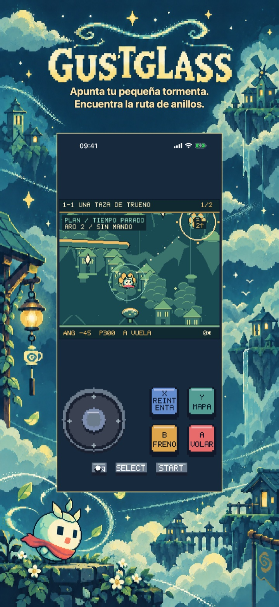
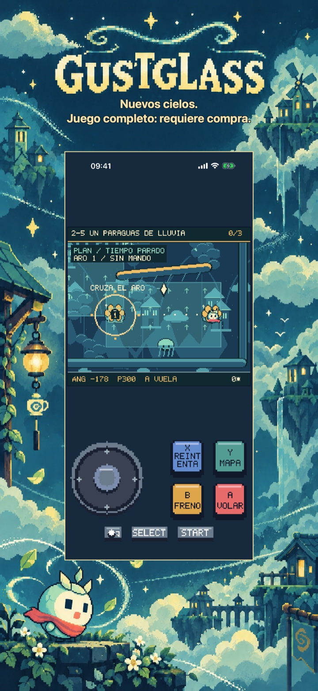
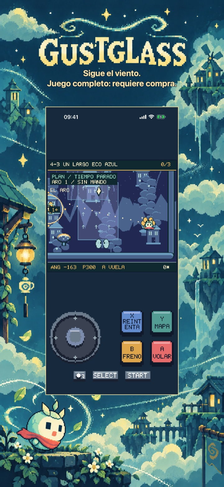
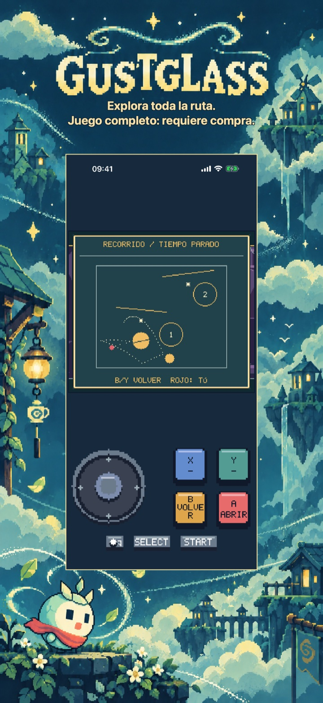
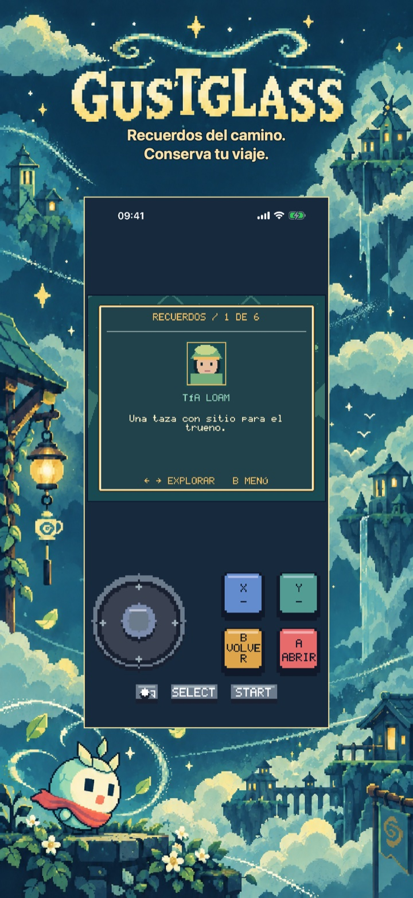
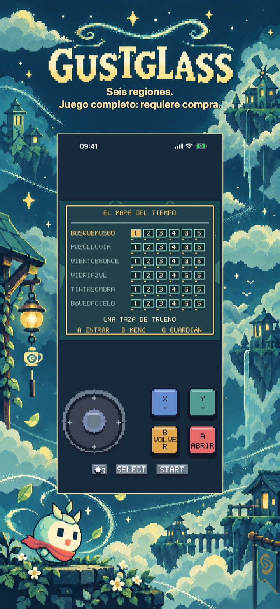

Gustglass: Rutas de viento
Gustglass: Rutas de viento
Apunta a Mica entre amplios anillos de viento y rebotes suaves. Planea, lanza y repite en seis regiones, 30 rutas y seis borrascas. Primera región gratis.
Próximamente en el App Store
La primera región: cinco niveles de historia completos, incluido el del guardián.

Aventuras píxel
Un viaje propio de este juego
Seis regiones incluyen 30 rutas de historia, con seis guardianes, y seis borrascas opcionales. Recoge fragmentos y marcas opcionales de par, hasta 108 marcas acumuladas. No hay límite de vidas. El tiempo de planificación no cambia un mismo tiro; los reintentos conservan anillos y fragmentos. Tu viaje se guarda localmente.
Empieza con el inicio gratuito
La primera región: cinco niveles de historia completos, incluido el del guardián.
Desbloquea cinco regiones más, 25 niveles de historia adicionales, las seis borrascas, todos los recuerdos y la historia completa con su final.
Pago único · Sin anuncios · Sin suscripción
Gustglass: Rutas de viento
Guía a una pequeña tormenta
Encuentra el camino a casa de Mica, una pequeña tormenta en una semilla agrietada.
Planea un vuelo repetible por amplios anillos de viento numerados. Ajusta ángulo y potencia desde un nido, lanza, dirige suavemente y frena en el aire. Rebotes, ramas, viento y agua forman la ruta. Reintentar restaura ángulo, potencia y fase del tiempo; la estela azul y los puntos previstos ayudan a ajustar.
Seis regiones incluyen 30 rutas de historia, con seis guardianes, y seis borrascas opcionales. Recoge fragmentos y marcas opcionales de par, hasta 108 marcas acumuladas. No hay límite de vidas. El tiempo de planificación no cambia un mismo tiro; los reintentos conservan anillos y fragmentos. Tu viaje se guarda localmente.
La primera región: cinco niveles de historia completos, incluido el del guardián.
Desbloquea cinco regiones más, 25 niveles de historia adicionales, las seis borrascas, todos los recuerdos y la historia completa con su final.
Sin anuncios, cuentas, analítica ni suscripciones. Una compra no consumible desbloquea el juego completo de forma permanente. Apple StoreKit gestiona las compras y restauraciones; el precio aparece antes de confirmar. Incluye inglés, español, francés, alemán e italiano. Todo el contenido está incluido localmente.
Dentro del juego
Dentro del juego
Seis vistas nativas muestran la idea principal, otros dos mundos, mayor profundidad, las recompensas del viaje y su inicio o atlas.
Encuentra la ruta de anillos.

Juego completo: requiere compra.

Juego completo: requiere compra.

Juego completo: requiere compra.

Conserva tu viaje.

Juego completo: requiere compra.
Vídeo de juego en inglés
Un vídeo de juego de 24 segundos en inglés. El contenido adicional requiere una compra única del juego completo.
Ayuda y soporte
¿Tienes dudas sobre Gustglass: Rutas de viento?
Encuentra respuestas prácticas sobre los controles, el progreso guardado, el capítulo gratuito y la compra del juego completo.
¿Cómo se juega?
¿Dónde se guarda mi progreso?
¿Qué puedo jugar gratis?
¿Qué desbloquea la compra del juego completo?
Pago único · Sin anuncios · Sin suscripción
¿Cómo restauro una compra?
La compra está pendiente o la tienda no está disponible. ¿Qué hago?
Contactar con soporte
Haz una pregunta o comunica un problema. Incluye el nombre del juego, tu dispositivo y qué ocurrió.
Contacta con nosotros en GitHubLos informes son públicos y requieren una cuenta de GitHub.